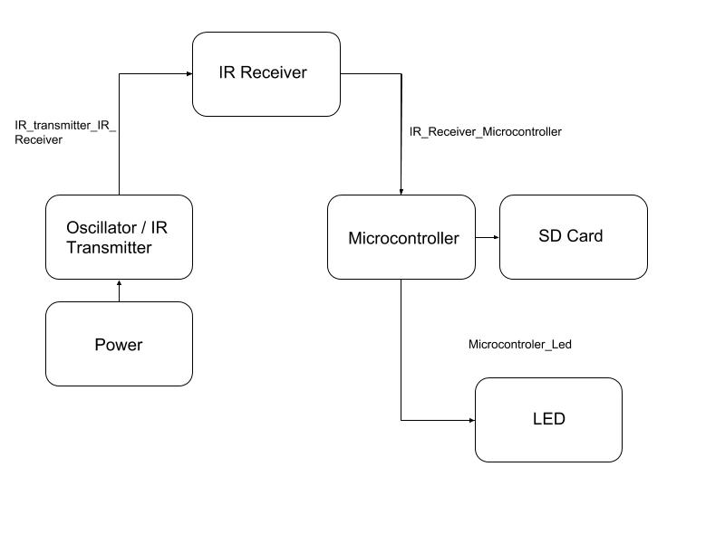
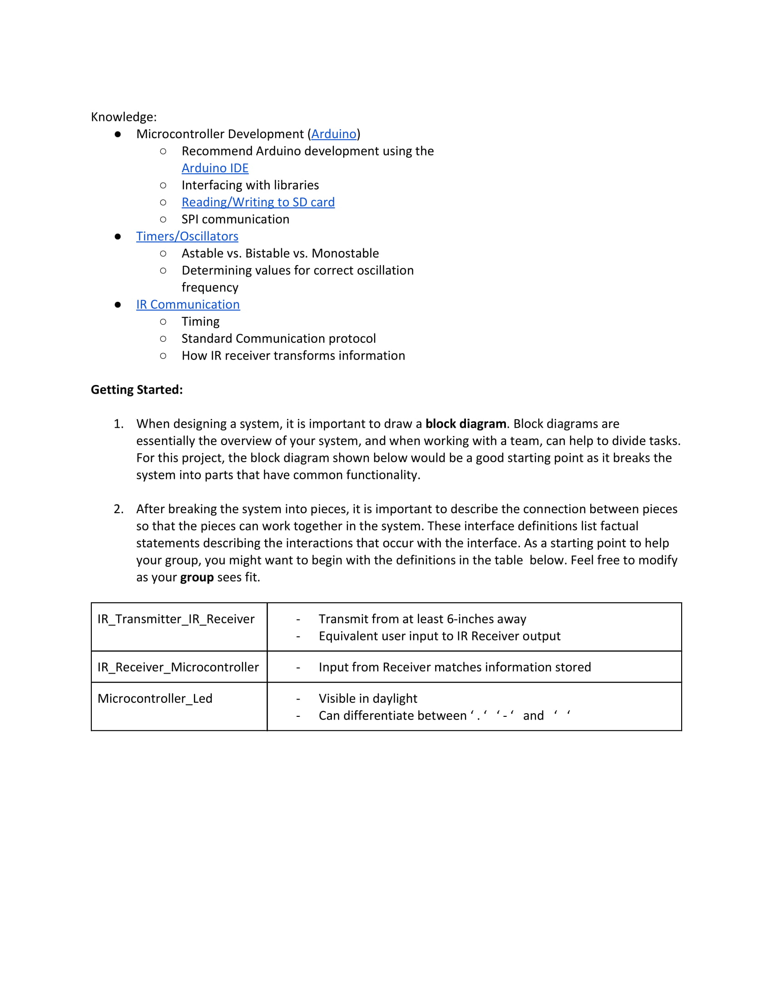

This is the block diagram I created when I first began my project. The main work flow is the circuit sending commands, is switched on via a momentary SPST switch. The signals will be received by the Arduino which will decode the message and save to an SD card. Then the command received can be displayed upon the LEDs.

This is the first of the documents describing the project. It is meant to guide the students in completion of the assignment. It provided engouh details to understand the project's basic requirements, but not enough to force the students into a specific solution method.
